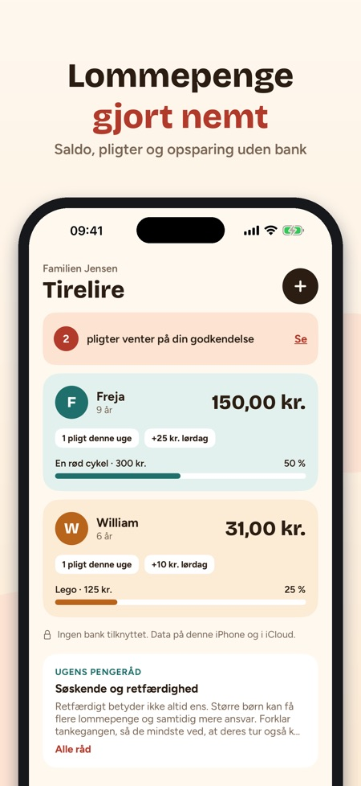
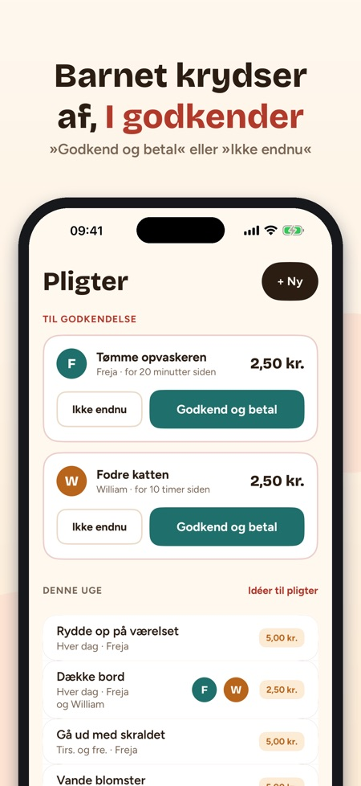
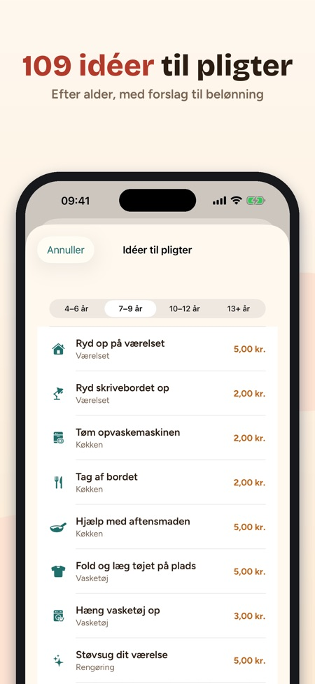

Pligter, opsparing og mål. Hvert barns saldo, pligter til godkendelse og sparemålet – delt mellem begge forældre via iCloud. Ingen bank, intet kort og ingen reklamer.



Tirelire holder styr på jeres børns lommepenge, belønner pligter og hjælper dem med at spare op til noget, der betyder noget. Ingen bank og intet kort: appen fører kun regnskabet, og mønterne bliver i den rigtige sparegris.
HVERT BARNS SALDO
• Et kort til hvert barn: saldo, ugens pligter, næste lommepenge og sparemål
• Lommepengene sættes ind af sig selv på den valgte dag, også hvis appen har været lukket
• + Tilføj / − Forbrug med to tryk og hele historikken gemt
PLIGTER, DER GIVER LOMMEPENGE
• 109 idéer til pligter sorteret efter alder (4–6, 7–9, 10–12 og 13+ år) med forslag til belønning
• Én gang, hver dag, bestemte dage eller én gang om ugen
• Barnet sætter flueben, I godkender: »Godkend og betal« eller »Ikke endnu«. Halvt klaret? Betal det halve.
ET MÅL, DER MOTIVERER
• 32 skabeloner til mål: cykel, spil, tur, gave …
• Ringen viser, hvor langt barnet er, og hvornår målet nås i det nuværende tempo
• »Nå det hurtigere« foreslår pligter, der passer til alderen
EN ENKEL BØRNETILSTAND
• På jeres iPhone eller barnets egen: saldo, mål og dagens pligter
• Barnet sætter flueben, når det er klaret; tilbage til forældredelen med Face ID eller adgangskoden
• 14 mærker at optjene
FOR BEGGE FORÆLDRE
• Invitér den anden forælder med iCloud-deling: samme saldi, begge godkender fra egen iPhone
• 35 råd om at tale om penge med børn, efter alder
• Widget, påmindelse på lommepengedagen, CSV-eksport, kroner, euro, pund, schweizerfranc eller dollar
KØB
Kan bruges uden køb med ét barn. Ét engangskøb låser op for ubegrænset antal børn, deling med den anden forælder, børnetilstand og widget. Intet abonnement.
Familiens data bliver på iPhonen og i jeres egen iCloud. Anonym brugsstatistik sendes kun, hvis I siger ja, og kan ændres i Indstillinger; i børnetilstand sendes intet.